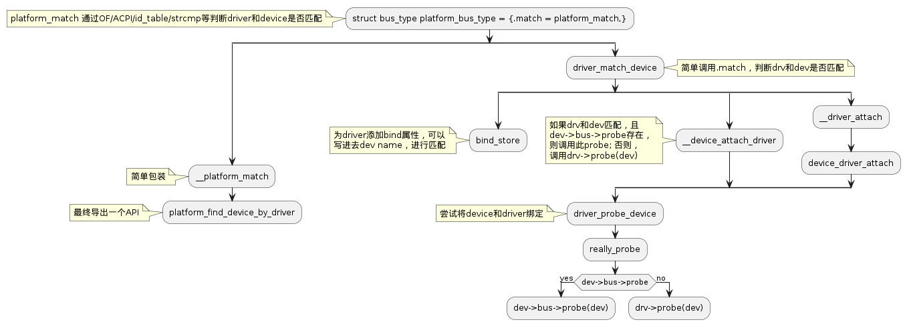
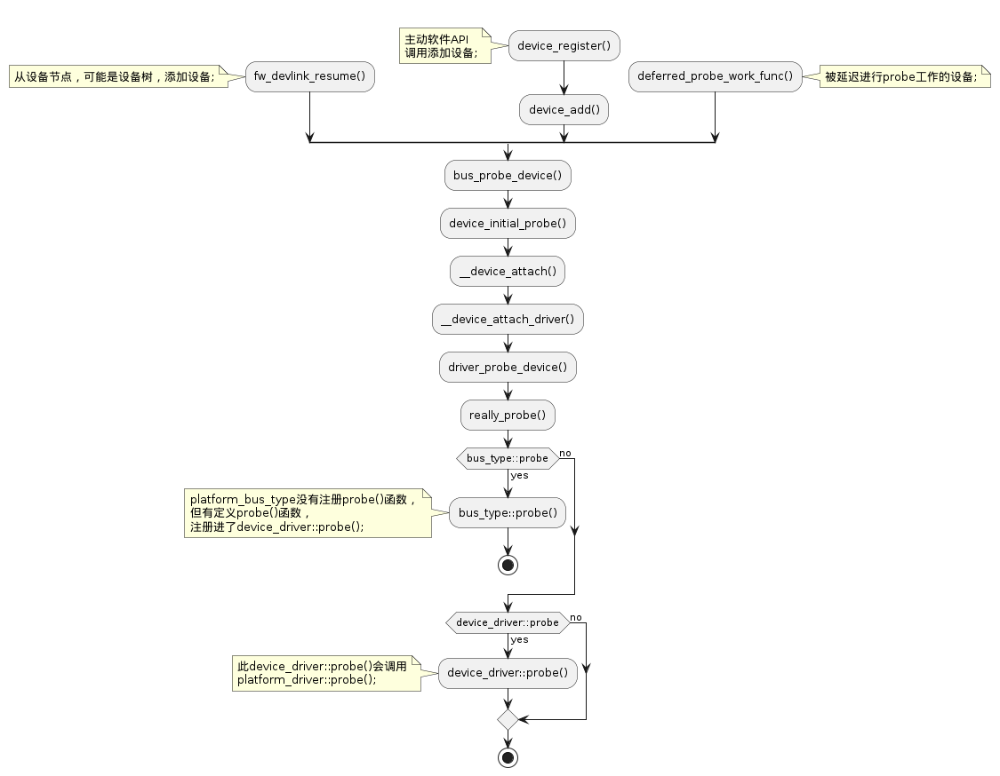

理清 bus/device_driver/device 之间的关系
Table of Contents
1. 总线及平台总线，平台设备和平台驱动
1.1. 总线
- 总线就是处理器到设备的通道；
- 设备模型设计中，所有设备通过一根总线相连，即便它是一个内部的，虚拟的，"platform"总线;
- 总线可以相互插入；
- 一个USB连接器通常是一个PCI设备；
- 设备模型代表总线之间真实的相互连接，以及他们所控制的设备之间的关系；
- 一个总线由bus_type结构体表示；包含名称，默认的属性(总线的，驱动的，设备的)，总线操作，电源操作，驱动核心的私有数据；
1.2. 平台总线
1.3. 平台设备
Platform devices are given a name, used in driver binding, and a list of resources such as addresses and IRQs.
struct platform_device { const char *name; u32 id; struct device dev; u32 num_resources; struct resource *resource; };
1.4. 平台驱动
struct platform_driver { int (*probe)(struct platform_device *); int (*remove)(struct platform_device *); void (*shutdown)(struct platform_device *); int (*suspend)(struct platform_device *, pm_message_t state); int (*suspend_late)(struct platform_device *, pm_message_t state); int (*resume_early)(struct platform_device *); int (*resume)(struct platform_device *); struct device_driver driver; };
- probe() 需要验证目标device硬件是否真实存在；probe()可以使用设备资源，包括clocks，和device platform_data.
platform drivers注册自身的一般方法：
int platform_driver_register(struct platform_driver *drv);
如果设备是非热插拔的，probe()就可以放在__init section中，只调用一次，前提是保证platform devices已经注册；
int platform_driver_probe(struct platform_driver *drv, int (*probe)(struct platform_device *));
Kernel modules可以由多个platform drivers组成，platform core提供helpers来完成成组的注册和卸载；如果一个失败了，已经注册进去的会按照相反顺序挨个卸载；
int __platform_register_drivers(struct platform_driver * const *drivers, unsigned int count, struct module *owner); void platform_unregister_drivers(struct platform_driver * const *drivers, unsigned int count);
提供了方便的宏传递 THIS_MODULE:
#define platform_register_drivers(drivers, count)
1.5. 设备枚举
作为一个规则，平台专属设置代码(platform specific setup code, often board-specific)来注册platform devices:
int platform_device_register(struct platform_device *pdev); int platform_add_devices(struct platform_device **pdevs, int ndev);
- 通用规则是只注册存在的devices，但只是通用规则；
- 一些cases中，固件会导出一张描述设备的表；
- 如果没有这样的表，通用的方式是系统启动代码来正确设置设备，也就是构建目标板专属内核；
- 许多cases中，只有内存和IRQ资源，不足以让设备的驱动工作；board setup code会通过设备的platform_data域提供更多额外的信息；
- 嵌入式系统需要不同平台设备可能具有的不相同时钟，直到需要当前设备时，才进行激活；system setup code会将devices和clocks进行关联，因此clk_get(&pdev->dev, clock_name)返回需要的内容；
1.6. 设备命名和驱动绑定
- platform_device.dev.bus_id是设备的官方名字；通过以下组件建构：
- platform_device.name 也用来进行驱动匹配
- platform_device.id 设备实例号，或者 -1 代表只有当前设备
- 通过拼接，因此 name/id "serial"/0 指明 bus_id "serial.0"; "serial"/3 指明 bus_id "serial.3"，这两个设备使用的驱动名称都是 "serial"; "my_rtc" /-1 是 bus_id "my_rtc", 此设备使用的驱动的名称是 "my_rtc";
- 驱动通过驱动核心代码和设备进行绑定，其中会在调用驱动probe()代码之前调用进行设备和驱动的匹配，匹配成功的才调用probe；probe()成功之后，驱动和设备才算绑定；而找到相互匹配的设备和驱动的方法有以下三种：
- 无论何时设备注册时，设备所属总线的驱动都会被检查是否匹配；平台设备需要在系统启动时就注册；
- 驱动使用platform_driver_register()注册时，会检查驱动所属总线上所有未绑定的设备进行检测是否匹配；驱动经常在后面注册或通过模块加载；
- 使用platform_driver_probe()注册驱动时，除了不会再在设备注册时进行检测(情形一)，其他和情形二一致；这种方式对应非热插拔设备；
1.7. 早期平台设备和驱动
- early platform interfaces 提供给早期系统启动时驱动所需的部分平台数据；
- 代码基于early_param()命令行解析进行构建，可以在很早的时候执行；
- 例子："earlyprintk" 类早期串口平台；后面也会有介绍；
- 1. 注册早期平台设备数据
- 架构代码使用函数 early_platform_add_devices() 注册平台设备数据；
- early serial console，这个应该是串口的硬件配置；
- 这个点注册的设备之后会匹配早期平台驱动；
- 2. 解析内核命令行
- 架构代码调用 parse_early_param() 解析内核命令行；这会执行所有匹配到的 early_param() 回调；
- 用户指示的早期平台设备会在这个时候注册；
- 对于早期serial console，用户可以在命令行指明端口: earlyprintk=serial.0 , "earlyprintk" 是类字符串，"serial"是平台驱动名，0 是平台设备号；如果 id = -1，那可以省略；
- 3. 安装属于某一类的早期平台驱动
The architecture code may optionally force registration of all early platform drivers belonging to a certain class using the function early_platform_driver_register_all(). User specified devices from step 2 have priority over these. This step is omitted by the serial driver example since the early serial driver code should be disabled unless the user has specified port on the kernel command line.
- 4. 早期平台驱动注册
Compiled-in platform drivers making use of early_platform_init() are automatically registered during step 2 or 3. The serial driver example should use early_platform_init("earlyprintk", &platform_driver).
- 5. 属于某一类的早期平台驱动的probing
The architecture code calls early_platform_driver_probe() to match registered early platform devices associated with a certain class with registered early platform drivers. Matched devices will get probed(). This step can be executed at any point during the early boot. As soon as possible may be good for the serial port case.
- 6. 早期平台驱动probe()
The driver code needs to take special care during early boot, especially when it comes to memory allocation and interrupt registration. The code in the probe() function can use is_early_platform_device() to check if it is called at early platform device or at the regular platform device time. The early serial driver performs register_console() at this point.
1.8. kernfs kernel3.14引入的内存文件系统，其提供内核子系统内部伪文件系统所需的功能
- 源于拆分sysfs使用的部分内部逻辑，它通过将有关硬件设备和相关设备驱动程序的信息从内核的设备模型导出到用户空间，提供一组虚拟文件，从而实现独立且可重用的功能。其他内部子系统可以更容易，更一致地实现自己的伪文件系统；
- kernefs_node表示kernfs层次的构成部分(building block)，每个kernfs节点由单个kernfs_node表示。大多数字段都是kernfs专用的，不应由kernfs用户直接访问；
- 初始化的时候创建kernfs_ndoe_cache的cache，只有在函数__kernfs_new_node中使用；
- 有两个函数会调用：
- kernfs_new_node;
- sysfs_init->kernfs_create_root(struct kernfs_syscall_ops *scops, unsigned int flags, void *priv); 一个新的kernfs层次，然后其保存在静态全局变量sysfs_root中，供各处使用。然后通过register_filesystem()将其注册为名为sysfs的文件系统；
sysfs_create_file(struct kobject *kobj, const struct attribute *attr) { struct kernfs_node *parent = kobj->sd; }
2. 代码逻辑追溯
2.1. struct bus_type platform_bus_type::match() 作用及调用逻辑
- 作用
- 判断struct device *dev和struct device_driver *drv是否匹配；
- 位于 platform.c 文件中；
被platform.c中的函数导出：
/** * platform_find_device_by_driver - Find a platform device with a given * driver. * @start: The device to start the search from. * @drv: The device driver to look for. */ struct device *platform_find_device_by_driver(struct device *start, const struct device_driver *drv) { return bus_find_device(&platform_bus_type, start, drv, platform_match); } EXPORT_SYMBOL_GPL(platform_find_device_by_driver);
在框架中的主要用处：
static inline int driver_match_device(struct device_driver *drv, struct device *dev) { return drv->bus->match ? drv->bus->match(dev, drv) : 1; }
- bus就是月老，设备和驱动就是mate，match 就是红线；
- bus_type::match()判断当前bus下任意drv和dev之间的匹配关系；
- 调用逻辑

2.2. struct platform_driver::probe() 及 struct platform_driver::driver::probe() 之间的关系
- 从具体的代码逻辑来看，platform_driver::driver::probe()用来调用platform_driver::probe()，并做一些其他设置，如时钟和电源域；
- 根据框架，也可以知道，在bus.c中只看得到注册进去的是device_driver，而非platform_driver，因此，先调用platform_driver::driver::probe()
2.3. /sys/bus/platform/drivers_probe 的作用及代码逻辑
- 作用
手动写入设备名，一般都是未匹配到驱动的设备名；如果已经有绑定上驱动，则会返回 -EINVAL；
- 代码逻辑
注册bus的同时，添加此属性文件：
int bus_register(struct bus_type *bus) { ...; retval = add_probe_files(bus); ...; }
具体细节：
static ssize_t drivers_autoprobe_show(struct bus_type *bus, char *buf) { return sysfs_emit(buf, "%d\n", bus->p->drivers_autoprobe); } static ssize_t drivers_autoprobe_store(struct bus_type *bus, const char *buf, size_t count) { if (buf[0] == '0') bus->p->drivers_autoprobe = 0; else bus->p->drivers_autoprobe = 1; return count; } static ssize_t drivers_probe_store(struct bus_type *bus, const char *buf, size_t count) { struct device *dev; dev = bus_find_device_by_name(bus, NULL, buf); // 根据buf中传进来的设备名，找到当前platform_bus_type下的对应设备 if (bus_rescan_devices_helper(dev, NULL) == 0) err = count; return err; } static BUS_ATTR_WO(drivers_probe); static BUS_ATTR_RW(drivers_autoprobe); static int add_probe_files(struct bus_type *bus){ bus_create_file(bus, &bus_attr_drivers_probe); bus_create_file(bus, &bus_attr_drivers_autoprobe); }
最重要的函数bus_rescan_devices_helper
static int __must_check bus_rescan_devices_helper(struct device *dev, void *data) { return device_attach(dev); } int device_attach(struct device *dev) { return __device_attach(dev, false); } static int __device_attach(struct device *dev, bool allow_async) { // 遍历所有driver，针对每个driver都调用__device_attach_driver ret = bus_for_each_drv(dev->bus, NULL, &data, __device_attach_driver); }
2.4. 挂在platform_bus_type这个总线上的驱动注册时struct platform_driver::probe的调用逻辑
/** * @probe: Called to query the existence of a specific device, * whether this driver can work with it, and bind the driver * to a specific device. */ struct device_driver { ...; int (*probe) (struct device *dev); ...; }; struct platform_driver { int (*probe)(struct platform_device *); ...; struct device_driver driver; ...; }; int __platform_driver_register(struct platform_driver *drv, struct module *owner) { ...; drv->driver.probe = platform_drv_probe; ...; return driver_register(&drv->driver); } static int platform_drv_probe(struct device *_dev) { struct platform_driver *drv = to_platform_driver(_dev->driver); struct platform_device *dev = to_platform_device(_dev); ret = of_clk_set_defaults(_dev->of_node, false); ret = dev_pm_domain_attach(_dev, true); if (drv->probe) { ret = drv->probe(dev); } }
- 在纯正的面向对象设计中，device_driver 作为 platform_driver 的父类，应该由框架调用 device_driver::probe()，而此 probe() 被 platform_driver::probe() 覆盖，因此，最终就是框架调用 platform_driver::probe();
- 此为 C 语言仿面向对象思想设计的内容；
- 而 probe() 的作用是确定当前driver是否可以在传进来的device上工作，也就是是否可以驱动device，如果可以，便进行绑定；
- 上述过程是先由bus负责找到可能是一对的platform_driver和platform_device之后，再调用platform_driver的probe；
struct kset bus_kset = { .name = "bus", .filter = bus_uevent_filter, }; static int bus_uevent_filter(struct kset *kset, struct kobject *kobj) { return get_ktype(kobj) == &bus_ktype? 1 : 0; } /** * struct bus_type - The bus type of the device * * @name: The name of the bus. * @match: Called, perhaps multiple times, whenever a new device or driver * is added for this bus. It should return a positive value if the * given device can be handled by the given driver and zero * otherwise. It may also return error code if determining that * the driver supports the device is not possible. In case of * -EPROBE_DEFER it will queue the device for deferred probing. * @uevent: Called when a device is added, removed, or a few other things * that generate uevents to add the environment variables. * @probe: Called when a new device or driver add to this bus, and callback * the specific driver's probe to initial the matched device. * @remove: Called when a device removed from this bus. * @p: The private data of the driver core, only the driver core can * touch this. */ struct bus_type { const char *name; ...; int (*match)(struct device *dev, struct device_driver *drv); int (*uevent)(struct device *dev, struct kobj_uevent_env *env); int (*probe)(struct device *dev); int (*remove)(struct device *dev); struct subsys_private *p; ...; };
